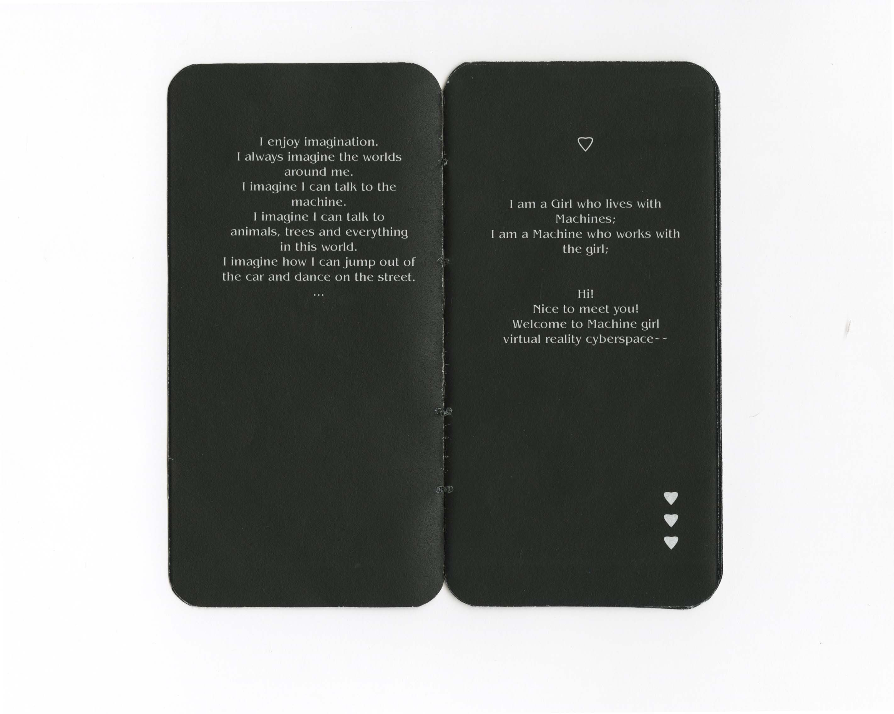
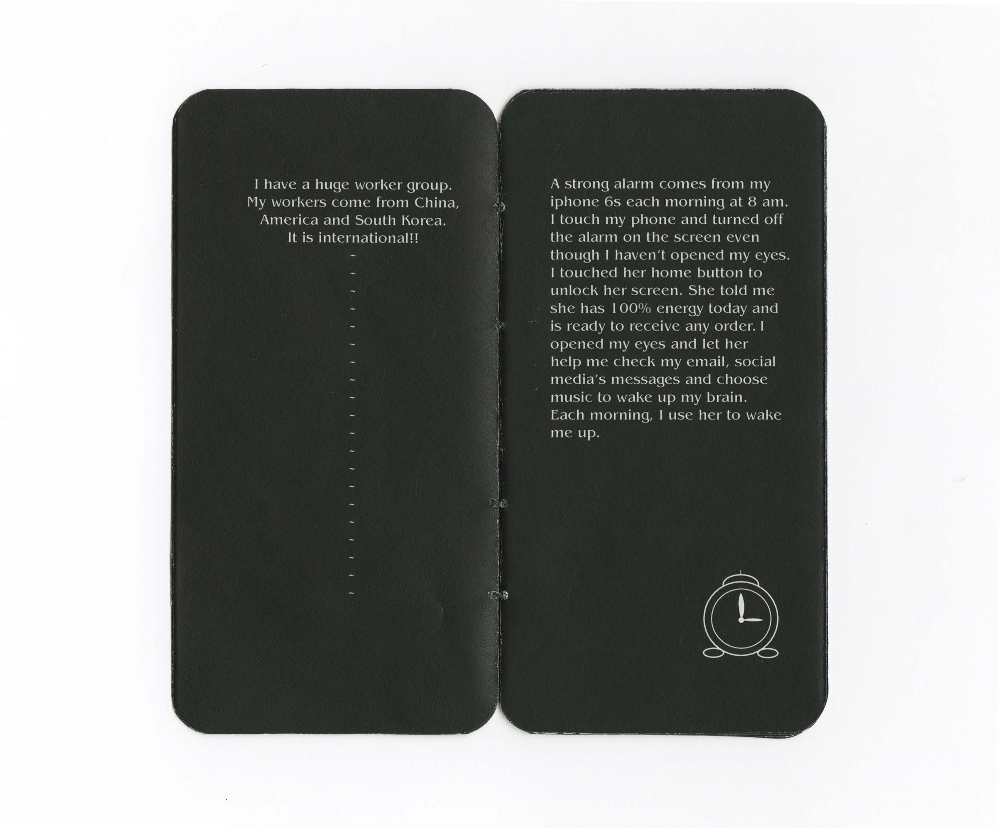
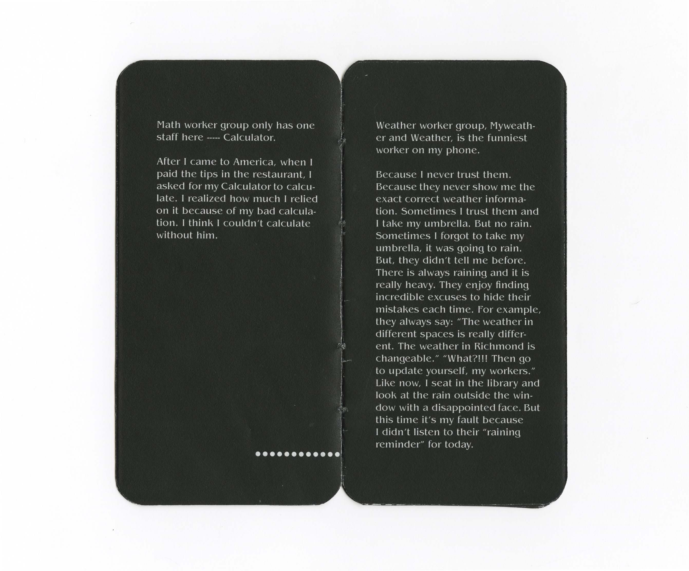
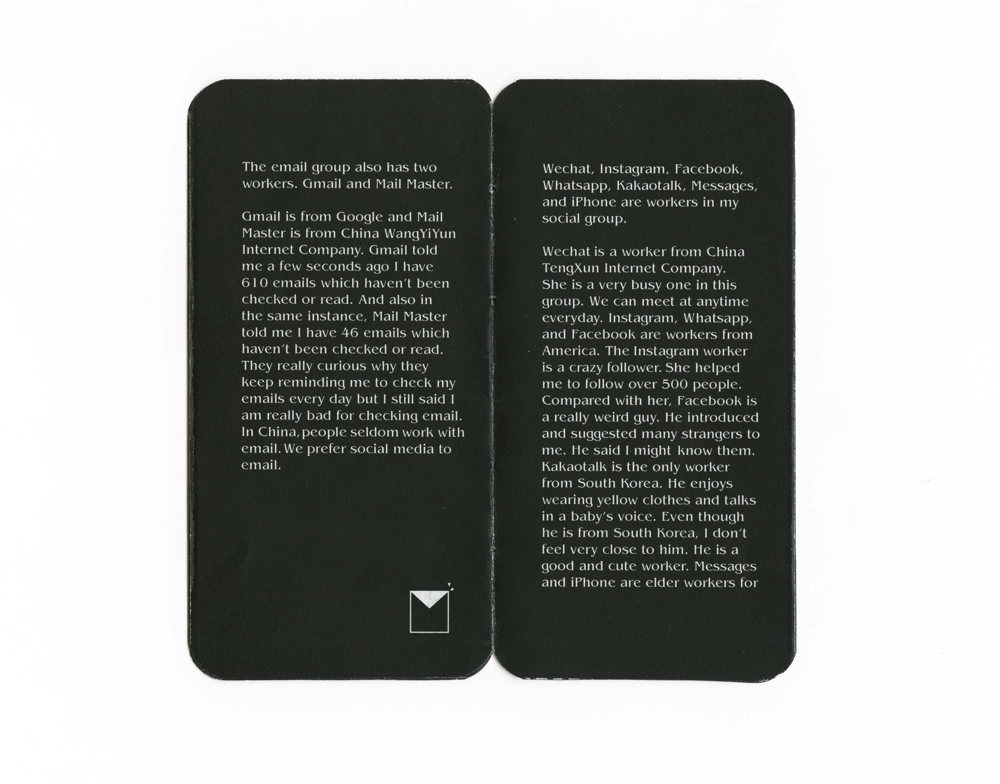
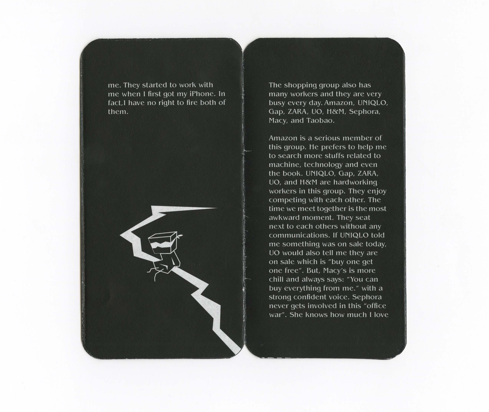
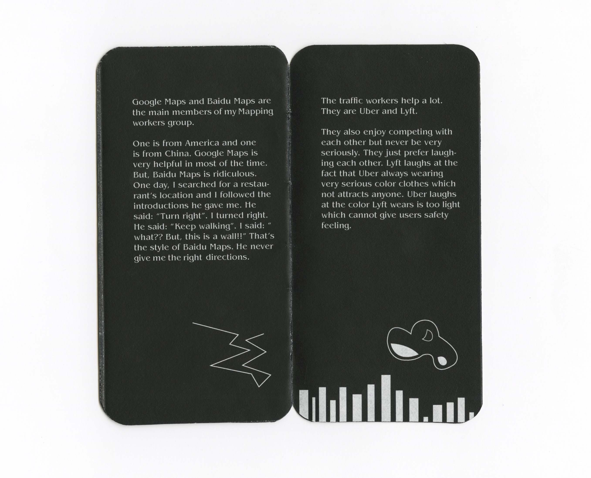
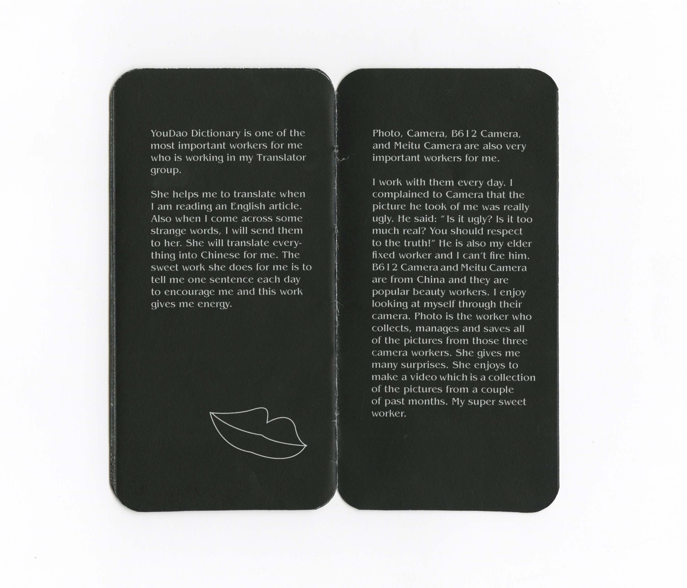

“Imagination is more important than knowledge. Knowledge is limited. Imagination encircles the worlds”(Viereck, 1929: 117. Albert Einstein)
Labor in Cyber 是一本以叙事方式讲诉的迷你小说，讲诉的是在赛博网络虚拟空间存在和工作的人力，主要人物以我手机中常用应用为原型，以办公室工作相处和社交为主要故事发展背景，手机闹铃声响起，手机在提醒你起床以及重要事件，一个红灯闪烁，手机需要电量的补充。在人与机械互相服务，共同工作的过程，幻想出了一个我们未曾发现，却早已介入的未知世界。
✿ Labor in Cyber show ✿


Labor in Cyber, sound piece and publication design, MFA friendship group show, Pump House, Richmond, VA, USA, Dec. 2019.
Required equipments: Digital voice recorder, White hard hat, LED light, wood table, black makeup mirror, 4.75 inches x 2.5 inches book (size smiliar to the iphone size)
The work we did as labor is the way it pushes us to become a cyborg. Based on the research of The Order project, here is a collabration stories in a magical cyberspace. Labor in Cyber is a multimedia publication show which contains a digital sound piece, art writing, and book publication design. The white hard hat is connected with the earphone and played the audio from the voice recorder, which gives the interactive experience of each viewer to hear the story. The book size is similar to the size of my iPhone 6s. I wrote some interesting stories among me and applications on my phone. They are all my labors. In our life, we work close every day, am I also labor for them? The application’s stories are a description of our digital life.
✿ Labor in Cyber book ✿






Published book : Labor in Cyber Size : 4.75 inches x 2.5 inches book ( Size similar to the iPhone6s size)
Art writings by Yutong Liu